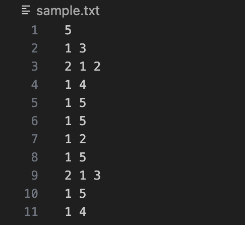
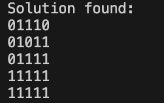

Nonogram Solver
Github repository: Nonogram Repository
Description
A Nonogram, also known as "Picross", is a type of logic puzzle where players fill a grid according to given clues for each row and column. These numerical clues indicate how many consecutive filled boxes there should be, each with a empty box in between. The goal is to reveal the hidden image drawn by the boxes.
In this project, I designed an algorithm to efficiently solve these nonogram puzzles on the command line given the dimension and clues through recursion and backtracking.
Key Features
- Recursive Backtracking Algorithm
- Row and Column Possible Pattern Generation
- Command Line/File Parsing
- Partial Validation (Pruning)
- C++17 Implementation
Sample Input

Input files begin with the single dimension number(must be square) for the puzzle. Then, each rows number of clues followed by the actual clues, and each columns similarly.
Sample Output

Output files show whether or not a solution was found, and if so, a printed version with 1s for filled boxes and zeros for unfilled.
Algorithm
- Parse puzzle data from input file to generate data structures
- Generate all valid row patterns from given clues.
- Place rows one at a time, recursively checking if they align with clues through backtracking
- Prune away invalid paths
- Return Solution
Usage
- Compile: g++ -std=c++17 -O2 nonnogram.cpp commandline.cpp solver.cpp -o solver
- Help: ./solver -h
- Execute with input file: ./solver -s inputfile.txt